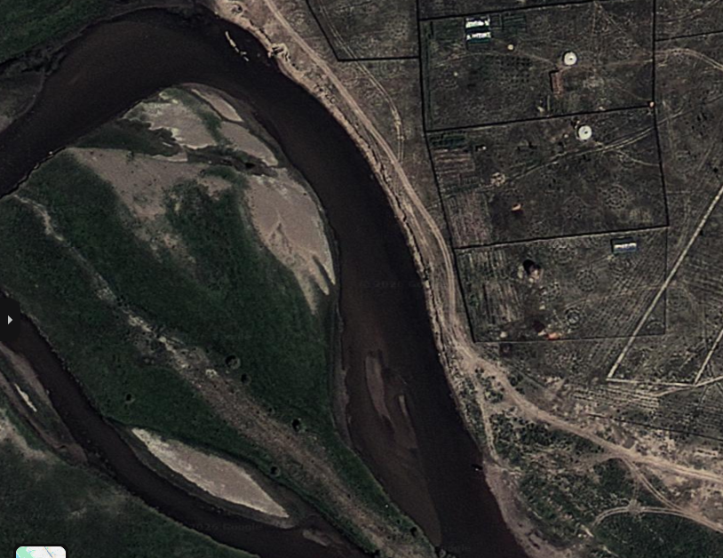
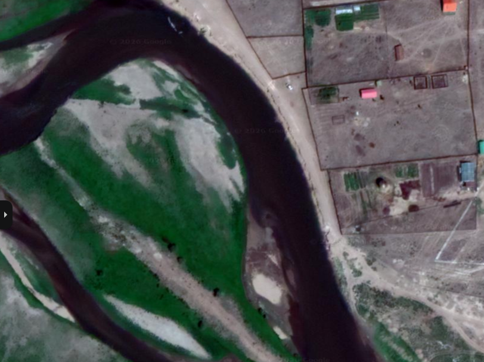
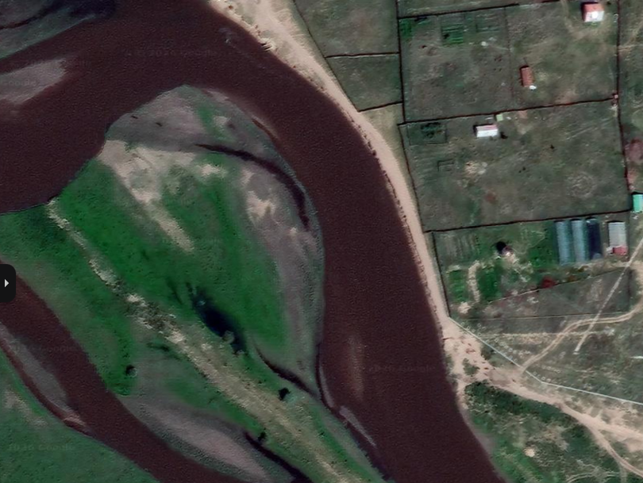
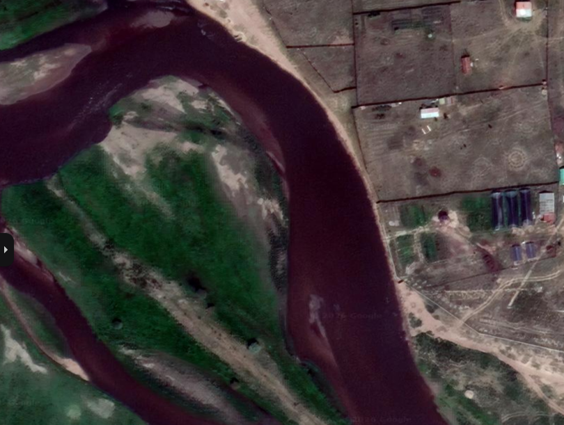
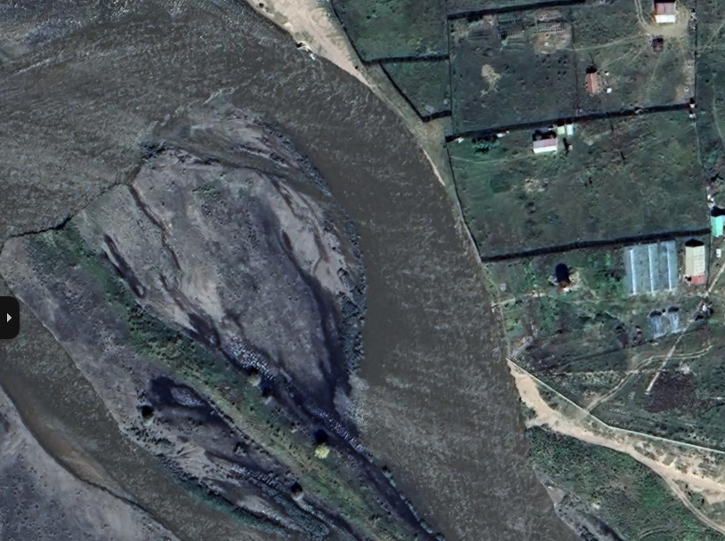
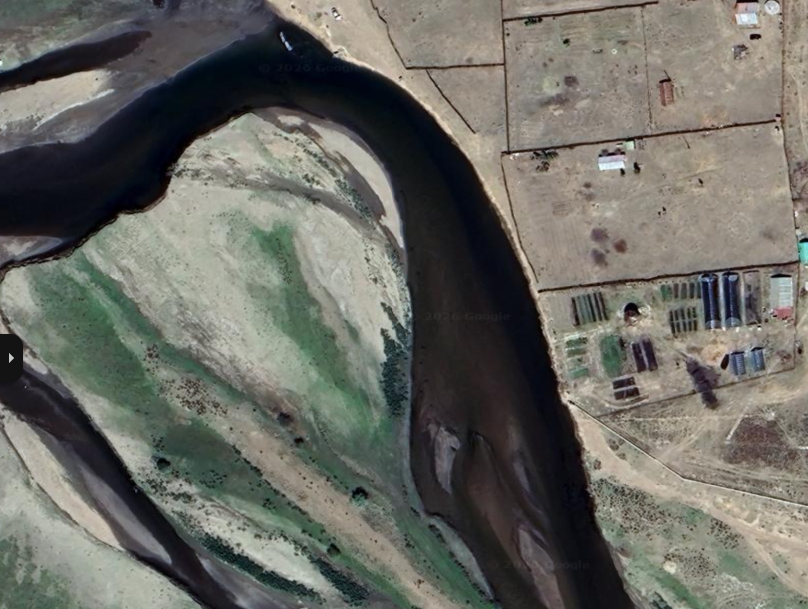
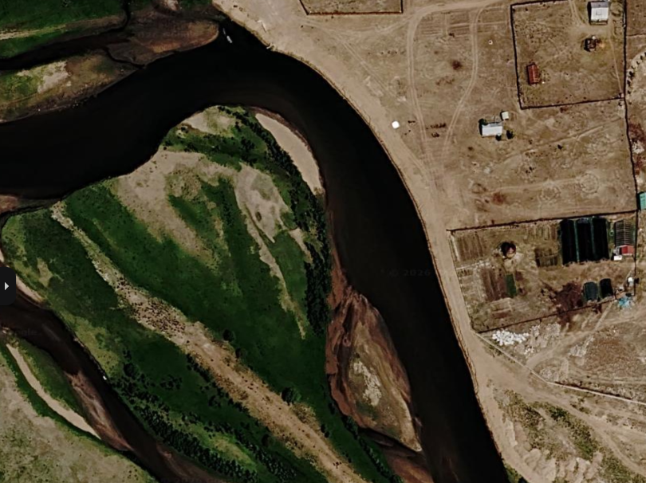
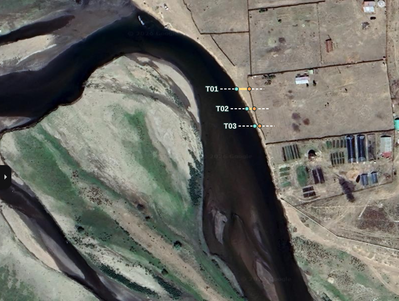
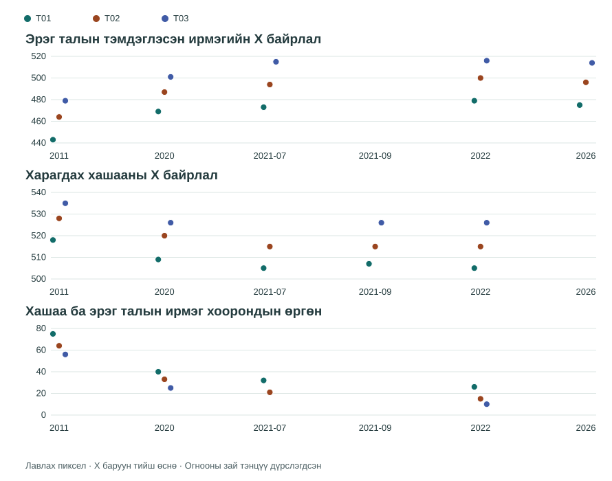

Дэлгэрмөрөн голын тохойн өөрчлөлт
Хөвсгөл аймаг, Мөрөн сум · 2011–2026
Олон хугацааны зургийн харьцуулалт
Эрэг ба хашааны завсрыг харьцуулахад хэрэгтэй кадруудыг он цагийн дарааллаар харуулав.

Хашааны дагуу цайвар зурвас болон замын мөр харагдана.

Тохойн гадна талын хашаа, эргийн завсар дахь зурвас харагдана.

Нэг хэсэгт хашаа, голын хооронд цайвар зурвас харагдана.

Хашааны дагуу зарим хэсэгт нарийн цайвар зурвас харагдана.

Ус хашааны ойролцоо харагдана. Энэ үеийн усны зах нь эргийн дээд ирмэгийг төлөөлөхөд тохиромжгүй.

Тохойн зарим хэсэгт хашаа, эргийн завсар нарийн хэвээр харагдана.

Хэрэглэгчийн мэдээллээр эзэмшигч хашаагаа голоос холдуулсан. Зураг дээр хэд хэдэн хэсэгт хашааны шугам өөрчлөгдсөн байна.
Хөндлөн огтлолын хэмжилт
2011 → 2022 Ижил огтлолуудын харагдах өргөн 75, 64, 56 px-ээс 26, 15, 10 px болж багассан.
Зургуудыг тогтвортой харагдах объектуудаар 2022 оны лавлах кадрт ижил төстэй хувиргалтаар тааруулж, ижил хөндлөн шугам дээр харьцуулсан. Өргөнийг тухайн үеийн хашааны X байрлалаас эрэг талын харагдах ус газрын заагийн X байрлалыг хасаж тооцов.


| Огноо | Огтлол | Эргийн ирмэгийн X | Хашааны X | Зурвасын өргөн | Тэмдэглэл |
|---|---|---|---|---|---|
| 2011 | T01 | 443 | 518 | 75 | Хашаа ба ус-газрын зааг харагдана. Хөрвүүлэлтэд гурван тулгуур цэг ашиглав. |
| 2011 | T02 | 464 | 528 | 64 | Хашаа ба ус-газрын зааг харагдана. Хөрвүүлэлтэд гурван тулгуур цэг ашиглав. |
| 2011 | T03 | 479 | 535 | 56 | Хашаа ба ус-газрын зааг харагдана. Хөрвүүлэлтэд гурван тулгуур цэг ашиглав. |
| 2020 | T01 | 469 | 509 | 40 | Гурван огтлол дээр ус-газрын зааг болон хашааны мөрийг ялгаж тэмдэглэв. |
| 2020 | T02 | 487 | 520 | 33 | Гурван огтлол дээр ус-газрын зааг болон хашааны мөрийг ялгаж тэмдэглэв. |
| 2020 | T03 | 501 | 526 | 25 | Гурван огтлол дээр ус-газрын зааг болон хашааны мөрийг ялгаж тэмдэглэв. |
| 2021-07 | T01 | 473 | 505 | 32 | T03 дээр хашааны мөр бүдэг, тасалдсан тул өргөн тооцоогүй. |
| 2021-07 | T02 | 494 | 515 | 21 | T03 дээр хашааны мөр бүдэг, тасалдсан тул өргөн тооцоогүй. |
| 2021-07 | T03 | 515 | — | — | T03 дээр хашааны мөр бүдэг, тасалдсан тул өргөн тооцоогүй. |
| 2021-09 | T01 | — | 507 | — | Булингартай усны үеийн зураг. Тогтвортой харьцуулах ус-газрын заагийг итгэлтэй ялгах боломжгүй тул дүрслэлийн лавлагаа болгон ашиглав. |
| 2021-09 | T02 | — | 515 | — | Булингартай усны үеийн зураг. Тогтвортой харьцуулах ус-газрын заагийг итгэлтэй ялгах боломжгүй тул дүрслэлийн лавлагаа болгон ашиглав. |
| 2021-09 | T03 | — | 526 | — | Булингартай усны үеийн зураг. Тогтвортой харьцуулах ус-газрын заагийг итгэлтэй ялгах боломжгүй тул дүрслэлийн лавлагаа болгон ашиглав. |
| 2022 | T01 | 479 | 505 | 26 | Тулгуур зураг. T03 дээр үлдсэн зурвас хамгийн нарийн харагдана. |
| 2022 | T02 | 500 | 515 | 15 | Тулгуур зураг. T03 дээр үлдсэн зурвас хамгийн нарийн харагдана. |
| 2022 | T03 | 516 | 526 | 10 | Тулгуур зураг. T03 дээр үлдсэн зурвас хамгийн нарийн харагдана. |
| 2026 | T01 | 475 | — | — | Гурван огтлолд өмнөх гол талын хашааны тохирох мөр танигдсангүй. Хашааг голоос холдуулсан тухай мэдээллийг тухайн газрыг мэддэг хүний ажиглалтаар тэмдэглэв. |
| 2026 | T02 | 496 | — | — | Гурван огтлолд өмнөх гол талын хашааны тохирох мөр танигдсангүй. Хашааг голоос холдуулсан тухай мэдээллийг тухайн газрыг мэддэг хүний ажиглалтаар тэмдэглэв. |
| 2026 | T03 | 514 | — | — | Гурван огтлолд өмнөх гол талын хашааны тохирох мөр танигдсангүй. Хашааг голоос холдуулсан тухай мэдээллийг тухайн газрыг мэддэг хүний ажиглалтаар тэмдэглэв. |
Зураас (—) нь харагдах байдал эсвэл байрлалын нөхцөлөөс шалтгаалан хэмжилт ашиглаагүйг заана.